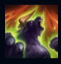
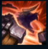

Alistar
| Alistar The Minotaur | |
|---|---|
| Release date | 21.02.2009 |
| Class | Vanguard |
| Positions | Support |
| Resource | Mana |
| Range type | Melee |
| Adaptive type | Magic |
| Base statistics | |||
| Health | 600 – 2402 | Mana | 350 – 1030 |
| Health regen. | 8.5 – 22.95 |
Mana regen. | 8.5 – 22.1 |
| Armor | 44 – 103.5 | Attack damage | 62 – 125.75 |
| Magic resist. | 32 – 53.25 | Crit. damage | 175% |
| Move. speed | 330 | Attack range | 125 |
Alistar este un războinic viteaz cu o reputație pe măsură, ce caută să-și răzbune clanul ucis de imperiul noxian. Deși a fost capturat și forțat să devină gladiator, voința lui de neclintit l-a ajutat să nu se transforme cu adevărat într-o bestie. Fiind eliberat din lanțurile foștilor săi stăpâni, acesta luptă acum în numele celor năpăstuiți și dezavantajați, folosindu-și atât coarnele, copitele și pumnii, cât și furia. |  |
RĂCNET TRIUMFĂTOR Alistar își încarcă răcnetul atunci când amețește sau mută campioni inamici sau atunci când mor inamici aflați în apropiere. Când răgetul se încarcă complet, Alistar se vindecă pe el însuși și pe toți campionii aliați din apropiere. |
||
|---|---|---|---|---|
PULVERIZARE Alistar izbește solul, provocându-le daune tuturor inamicilor din apropiere și aruncându-i în sus. |
||||
LOVITURĂ DE CAP Alistar izbește ținta cu capul, provocându-i daune și proiectând-o în spate. |
||||
| ZDROBIRE Alistar zdrobește unitățile inamice din apropiere, poate trece prin unități și primește cumuluri atunci când îi provoacă daune unui campion inamic. Când ajunge la numărul maxim de cumuluri, următorul său atac de bază împotriva unui campion inamic îi provoacă daune magice bonus și îl amețește. |
||||
 |
VOINȚĂ DE NECLINTIT Alistar scoate un răget sălbatic, eliminând toate efectele de control al maselor care îl afectează și reducând daunele fizice și magice pe care le suferă pe toată durata efectului. |